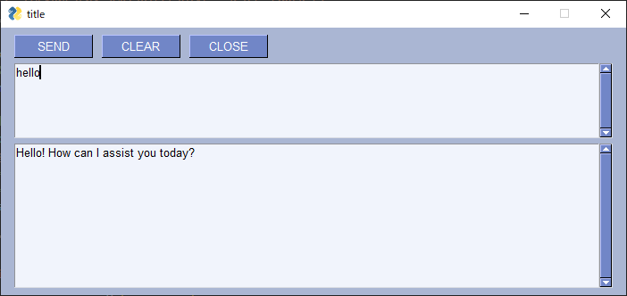

PythonでCHAT GPTと会話するAPIキーのソースコードの紹介です。
まずはCHAT GPTにログインしAPIキーとなるものを取得して下さい。sk-...と始まるものとなります。
これをダウンロードした「chatgpt_2023.py」の7行目の以下の行に貼り付けて下さい。
api_key = 'sk-....'

実行方法.
python chatgpt_2023.py
source code https://github.com/su5filed/chatgpt_python/blob/main/chatgpt_2023.py
ver Python 3.11.4
モデルを変更する(2023/7/13時点)
「chatgpt_2023.py」の16-17行目 を以下のように変更
# model="gpt-3.5-turbo",
model="gpt-4",
参考:GPT-4のAPIが使えない場合は？
「The model: `gpt-4` does not exist」というエラーメッセージが出る場合
OpenAIのPlaygroundにアクセスし、Chatモードでモデル項目を選択して
GPT-4が表示されていない場合は使えない。

GPT-4 APIでの画像取り込みについて
2023/5/17 以下で議論されていた？、どうやら未実装のよう・・。だがそのうち実装されると思う。
GPT-4 API and image input
Hi there,
Is there a documented way to supply GPT-4 API with images?
I couldn’t find anything in OpenAI’s website.